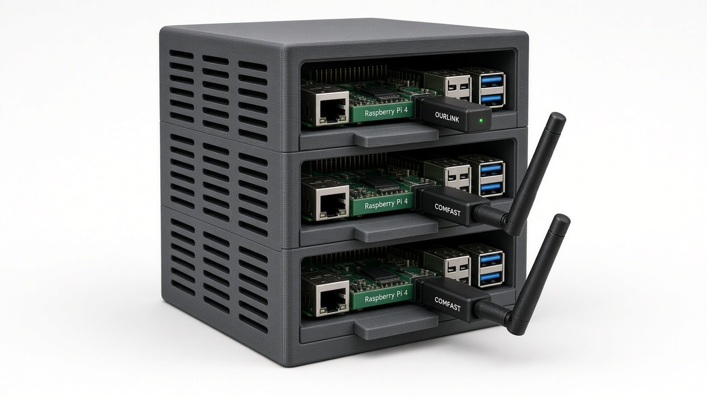
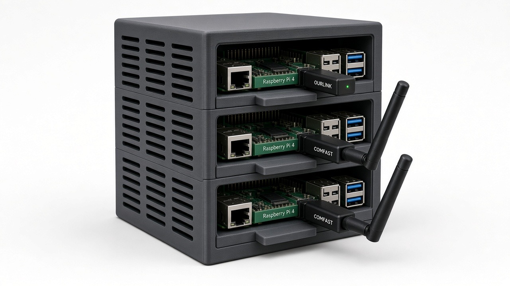
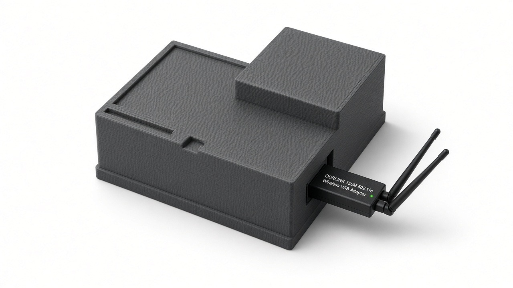

Abstract. Language-model chat usually ends at a cloud completions API. This paper treats the place that call ends — a hosted model, or a machine the caller can name — as part of the surface, and it describes one local answer. Pi 0.2 High puts a stdlib Python router in front of a three-node Raspberry Pi mesh and exposes POST /v1/chat/completions on port 18080, with a small chat page on the same port. We hold the request shape fixed, the fleet fixed (pi2 runs llama.cpp on port 8080; pi3 and pi4 run Ollama on port 11434; the default model tag is qwen2.5:0.5b), and the failure rule fixed: a request pinned to one peer does not fall through to another peer. What varies, and only when the mesh is allowed to choose, is which healthy peer answers. The router lives in pi-pair/ at https://github.com/akashnaren/raspberry-pi-fun. This write-up contributes the system and the method for reading it. The fleet is being brought up for local models, so the paper does not report a benchmark grid.
An agent that chats, or a person using a small chat page, sends one request and waits for text. In ordinary practice that request leaves the machine. It crosses a network to a completions API, a model the caller does not hold, and a bill the caller does not see until later. The program on the near side of the call can be careful about what it shows the model. It still cannot say which computer produced the tokens, or what happens when the path to that computer fails.
Cloud-only inference binds three ordinary properties of the loop.
A local mesh puts those three properties back on the call. The request shape stays the one agents and chat clients already speak. The thing that changes is where the request is allowed to end.
Pi 0.2 High is that surface for one small fleet. Three Raspberry Pi boards — pi2, pi3, and pi4 — sit in one custom 3D-printed vertical rack. Their Tailscale names are rpi-pi2, rpi-pi3, and rpi-pi4. A router written in the Python standard library exposes POST /v1/chat/completions, GET /health, and GET /peers, and serves a chat page from the same process. Behind the route, pi2 runs llama.cpp and pi3 and pi4 run Ollama. When a request omits a model, the tag is qwen2.5:0.5b.
The measurement this setup is for, and which this paper does not yet report, is a placement comparison. Hold the chat contract fixed. Hold the three-node fleet fixed. Hold the rule that a pin does not hop to a different board. A later run can then vary the checkpoint, the peer, and a cloud call, and read cost and reliability against a target that did not move. This note writes down that target. It is a system and a method. It is not a score table.
qwen2.5:0.5b, when the request does not name one.X-Pi-Target set to a peer name never selects a different peer.auto and the mesh is on. The router round-robins that list.Section 2 describes the fleet, the router, and the HTTP surface. Section 3 records the choices that keep the surface small and the pin honest. Section 4 shows the rack. Section 5 says what has been observed and what has not. Section 6 places the note among nearby work. Section 7 concludes.
The code is the pi-pair/ tree. The name on the process banner, in the installer, and in this paper is Pi 0.2 High. python3 mini_chat.py and bash start.sh start the same server. The default bind is all interfaces on port 18080. Nothing in the router is installed from a package index.
A peer is a name, a host, a port, and a kind. The kind is ollama or llamacpp. The built-in map, which peers.example.json repeats, is the fleet the chat was written against.
| Name | Kind | Port | Routes the router calls |
|---|---|---|---|
| pi2 | llamacpp | 8080 | GET /v1/models, POST /v1/chat/completions |
| pi3 | ollama | 11434 | GET /api/tags, POST /api/chat |
| pi4 | ollama | 11434 | GET /api/tags, POST /api/chat |
Hosts are not printed in this paper. They live in peers.json, which is gitignored. The installer copies the example file to peers.json only when that board does not already have one, and PI_PAIR_PEERS can point at a different file. On Tailscale the boards are rpi-pi2, rpi-pi3, and rpi-pi4. Those names are how the fleet is addressed. They are not a claim about who else can open port 18080.
pi2 is also probed on port 11434 when port 8080 does not answer. That second try stays on the peer named pi2. It is not a hop to pi3 or pi4. Section 3.5 keeps the two cases apart, because they are easy to conflate.
The process is a threaded HTTP server from the standard library. Files for the chat page are read from static/. A request that leaves that directory, or that names a path with a slash, is not served. GET / and GET /index.html return the chat page with the default model tag substituted into the HTML. GET /health and GET /peers return the same JSON object: a router ok flag, the model tag, how many peers probed successfully, the peer list, the inference-slot cap, and the health-cache lifetime in seconds.
POST /v1/chat/completions is the only body the router accepts. The handler reads X-Pi-Target and X-Pi-Mesh. If a header is missing it takes pi_target or pi_mesh from the JSON, then deletes those keys. The worker never sees them. The default target is auto. The default mesh is on. The model is the request's model, or else the environment variable MESH_MODEL, whose default is qwen2.5:0.5b. Temperature defaults to 0.7. The token cap defaults to 256, read from max_tokens or, if that is absent, from max_completion_tokens.
A semaphore limits concurrent inference. The default is three slots, from PI_PAIR_SLOTS. A request that cannot take a slot within 120 seconds receives HTTP 503 and the error inference slots busy — try again. The slot is released when the handler returns, including when the worker failed.
A non-streaming success is a chat completion object. Added fields record the peer name, the elapsed milliseconds, the model string actually sent, and the worker kind. The header X-Pi-Peer repeats the peer name. A streaming success is text/event-stream: a comment line naming the peer, a role chunk, content chunks, a final chunk carrying the same peer fields, and the usual done marker. Worker failures become HTTP 502 with a JSON error string. Any other path is 404. Cross-origin requests are allowed from any origin. The router is not an authentication boundary. Reaching port 18080 is enough to call it.
The function that picks a peer is the rule the rest of the paper depends on.
If the mesh is off, or the target is any name other than auto, the router looks up that name and stops. An unknown name raises unknown peer plus the name. A known name whose probe failed raises offline for that name, with the peer's note appended when it has one. A known name that is up, but cannot serve the requested model, raises has no usable model. There is no second candidate. In particular, mesh off does not mean "pick whoever is up." A target of auto with the mesh off looks for a peer literally named auto, fails to find one, and errors.
If the mesh is on and the target is auto, the router keeps peers whose probe succeeded and whose advertised models can serve the request, then round-robins that list. An empty list raises no peers up.
Usable is defined differently for the two kinds, and the difference matters for a later comparison. On an Ollama peer the requested tag is usable when the tag list is empty, when the tag is present, or when the name before the colon occurs inside a listed tag. An empty list is treated as usable because a probe can succeed without returning names. On a llama.cpp peer, any non-empty model list marks the peer usable, regardless of whether the requested tag appears. The string sent onward is the requested tag only when that tag is in the list and contains no colon. Otherwise the router sends the first id the server advertised. The default tag contains a colon, so a llama.cpp peer is normally called with its own first id, not with qwen2.5:0.5b. The completion records the string that was sent, in pi_model, together with pi_kind. A reader can see the substitution. A measurement that ignores those fields cannot.
Probes are cached for PI_PAIR_HEALTH_TTL seconds. The default is 2.5. The cache exists so a page polling /health does not stampede /api/tags or /v1/models. It is process-local. The auto path reads the snapshot, which may be the cached one. The pinned path probes that peer again when the request is handled, so a pin is not decided only by a snapshot taken for someone else's page load.
install.sh is run by hand on a board. It copies the tree to ~/pi-pair unless PI_PAIR_DIR says otherwise, leaves an existing peers.json in place, and writes a user systemd unit named pi-pair.service. The unit's description is Pi 0.2 High. It sets the bind address, the port, the peers file, the node name (the short hostname unless PI_PAIR_NAME is set), and MESH_MODEL. The process starts with python3 on mini_chat.py, restarts on failure after three seconds, and is enabled with the user instance of systemd. The script does not move the listen port off 18080 unless PI_PAIR_PORT is already set. It prints, and does not itself run, the commands that would make Ollama listen on port 11434 for other machines. If Ollama is already on the board, the script pulls qwen2.5:0.5b and, if that pull fails, tries tinyllama.
mesh-hello.sh is the bring-up probe, not a benchmark. It requests /health on the local port, probes each peer at the path that matches its kind, and sends one non-streaming completion with X-Pi-Target: auto and X-Pi-Mesh: on. A router with no model process behind it can still pass the first half of that probe. /health answers, and the peers are down. That state is expected while the fleet is coming up. It is not a model result, and this paper does not treat it as one.
| Variable | Default | Role |
|---|---|---|
PI_PAIR_HOST |
all interfaces | Bind address |
PI_PAIR_PORT |
18080 |
Chat page and proxy |
PI_PAIR_PEERS |
peers.json if present, else the built-in map |
Peer list |
MESH_MODEL |
qwen2.5:0.5b |
Model tag when the request omits one |
PI_PAIR_SLOTS |
3 |
Concurrent inference cap |
PI_PAIR_HEALTH_TTL |
2.5 |
Seconds to cache peer probes |
PI_PAIR_NAME |
short hostname | Name written into the user unit |
The boards already have Python. A router that needs a package install is a second step, a second failure, and a second thing to keep aligned on three machines. HTTP, JSON, threads, and the URL library are enough to proxy chat. The tests stay inside that boundary. They are the standard library's unittest, with fake Ollama and llama.cpp handlers in the same process. A reader can run them without the rack and without a model file.
The chat page and any agent that already speaks completions should not have to know which board runs which runtime. The router translates. An Ollama peer receives /api/chat with messages, a stream flag, and options for temperature and the token cap. A llama.cpp peer receives /v1/chat/completions with messages, a stream flag, temperature, and max_tokens. Ollama's stream is newline-delimited JSON. llama.cpp's stream is server-sent events. Both are turned into server-sent events for the client, in the chat-completions chunk shape, with the peer name attached. The client dialect stays one. The worker dialect stays whatever that board already runs.
X-Pi-Target takes auto, pi2, pi3, or pi4. X-Pi-Mesh takes on or off. Putting those facts in headers keeps them next to the request and out of the prompt. The JSON aliases exist for a caller that cannot set headers. They are removed before messages are forwarded, so a worker log of the body is not full of a field the worker does not understand. The response tells the caller what happened, through X-Pi-Peer and the pi_peer, pi_ms, pi_model, and pi_kind fields. Routing is visible on the way in and on the way out.
This is the choice the system is willing to be inconvenient about. If the caller names pi3 and pi3 is down, the error names pi3. The router does not try pi4, and it does not try a cloud model. Auto mode is the only path that may choose among peers. Treating a pin as a preference, with fallthrough as a kindness, would make a later measurement unreadable: a success labeled pi3 might have been pi4. The same reason a controlled comparison refuses to swap the action set under a condition applies here. The name on the request has to be the machine that ran it, or the name has to be auto and the response has to say which machine it was.
pi2 may answer llama.cpp on port 8080 and, at other times, an Ollama-shaped probe on port 11434. The health check tries the configured port and then the alternate ports recorded for the peer named pi2. The name in the result does not change. That retry is there because one board has been observed on more than one port. It is not permission to leave the board. Section 3.4 is about peers. This section is about ports on one peer.
Three boards, and a page that polls health, are enough to crowd a small model or a tags endpoint. Three inference slots, a two-minute wait, then HTTP 503, is a blunt limit. A 2.5 second health cache is a blunt limit of the other kind. Neither is a scheduler, and neither is tuned against a measured knee in latency. Both exist so the first overload behavior is "busy" or "cached" rather than a stampede. Section 5 does not report how those knobs behave under real clients. They are part of the fixed system, not part of a result.
GET / is a small page for a person at the rack or on the tailnet. It calls the same completions route as an agent would. There is no separate chat dialect for the browser. If the page and an agent disagree, the disagreement is in the client, not in a second server.
pi2, pi3, and pi4 share one custom 3D-printed vertical chassis. The boards are stacked so each bay still reaches the front connectors: Ethernet and USB, with a USB Wi-Fi adapter and an antenna where the radio is a dongle rather than a socket on the board. The three figures in this section are renders of that chassis. They are the mechanical record for the note. They are not a wiring diagram, and they do not replace the peer table in Section 2.1. Board names in the prose follow the peer map. The renders are not used to guess a different model number than pi2, pi3, and pi4.



This section is short because the fleet is being brought up for local models, and a short section is the honest one.
The router starts without a model process. /health can report the router up and a peer down in the same document. That split is the observation worth keeping. A green process and a down board are different facts, and the pin rule in Section 3.4 depends on not blurring them. The bring-up script prints both. While models are still being installed on the boards, "peers down" is a normal reading, not a failed experiment.
The unit tests stand up fake workers and check the contract: loading a peer list, the pin error when the named peer is down, assembly of a stream, and the shape of a completion. They do not boot a Raspberry Pi, they do not load qwen2.5:0.5b, and they do not time a token. A passing test supports Section 2. It does not support a sentence about how fast the rack talks.
The following are absent because they have not been measured on this fleet. Putting a number next to any of them would be an invention.
One code fact should be recorded before those measurements start, because it will otherwise be misread as a result. The default tag is an Ollama-style name. On the llama.cpp peer the router usually substitutes the first id that peer advertises. A comparison of pi2 with pi3 under the default tag is not, by itself, a comparison of the same weights. The next measurement has to log pi_model and pi_kind on every completion. Otherwise changing boards quietly changes models.
The method those runs should follow is the one this paper fixes, and it is the same shape as holding an interface constant while varying one factor. Same request shape. Recorded peer. Recorded model id. No silent substitution of a different board. A cloud call only when the protocol says the target is the cloud, not as a hidden backup for a pin.
Local runtimes already exist, and this note uses two of them rather than replacing them. llama.cpp serves a model behind an OpenAI-compatible HTTP server. Ollama serves a model behind /api/chat and lists tags at /api/tags. Pi 0.2 High assigns llama.cpp to pi2 and Ollama to pi3 and pi4. It does not merge the two inside the worker. The single dialect is the caller's route.
That route is the chat completions shape already sent by agents, editor tools, and small chat pages. Keeping it means the mesh is a place a call can end, not a new client library. The hosted shape has no field for "which of my boards." X-Pi-Target and X-Pi-Mesh are that field. They are local to this router. They are not proposed here as a standard.
qwen2.5:0.5b is a small Qwen2.5 tag, chosen as the default because a Pi-class board can hold a model of that size. This paper does not review the Qwen2.5 technical report, and it does not claim a quality number for the tag on these boards. The tag is fixed so that a request with no model field is the same request tomorrow.
Other on-device paths — phone runtimes, vendor stacks, a single board with a larger GPU — each answer "run a model here." The neighboring fact for this paper is narrower. A chat client already expects one HTTP completions endpoint. The work is to make that endpoint local, to name the board, and to fail closed when the named board is down. Systems that shard one large model across many machines are a different design. This fleet does not shard. Each peer that is up runs a whole small model, and the router picks a peer.
A companion note on this site, Structured Views for Agent-Native UIs, treats the way an application shows itself to an agent as the variable and holds the model fixed. The present note is the other half of that sentence. It holds the request shape fixed and treats the place the model runs as the variable. The two questions are easy to tangle. A structured view does not put tokens on a Pi, and a Pi mesh does not decide what an agent is allowed to click. They share the habit of writing down what is held still before claiming a comparison.
What this note does not claim is worth a paragraph of its own. That a small model can run on a small board is not news. That llama.cpp can speak chat completions is not news. That a pin ought to mean the named machine is a choice made in this router, not a result discovered about the industry. No citation is attached to that choice. The claim is the specific system: three named boards, two worker kinds, one completions route, a pin that does not fall through, and a written target for measurements that have not been taken yet.
Pi 0.2 High is a local chat surface for a three-node Raspberry Pi mesh. The caller sends /v1/chat/completions to port 18080. The router, standard-library Python in pi-pair/, proxies to llama.cpp on pi2 or to Ollama on pi3 and pi4, and defaults to qwen2.5:0.5b when the caller is silent about the model. X-Pi-Target and X-Pi-Mesh say whether a named peer must answer. A named peer that is down stays down in the error. The call does not wander to another board, and it does not wander to a cloud model.
The rack in Section 4 is the hardware that map refers to. Sections 2 and 3 can be checked without it. The fleet is still being brought up, so this note stops before a table.